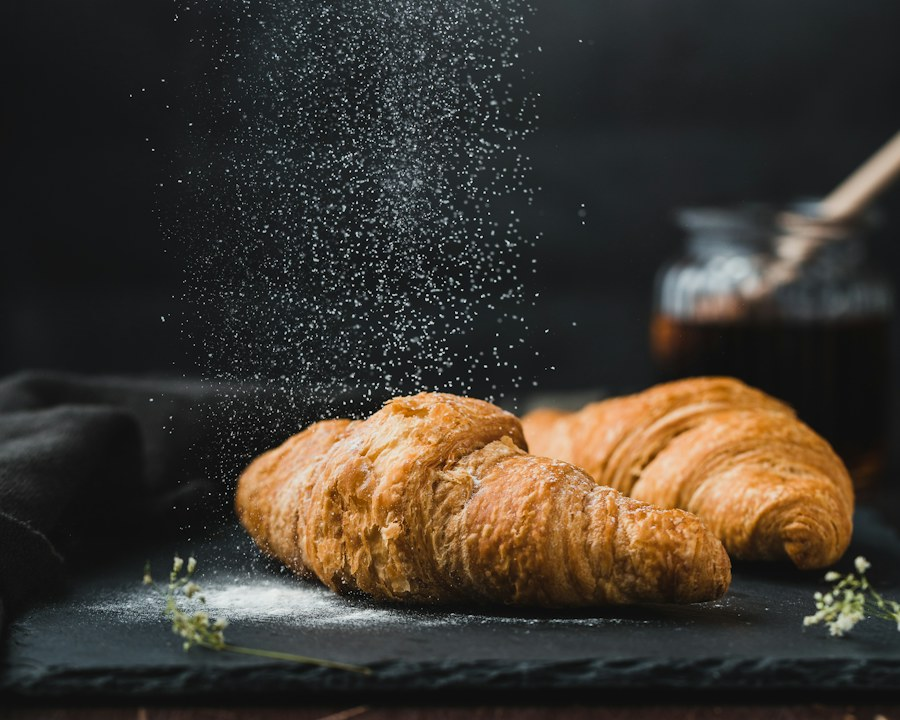

OUR LITTLE CLUB CAFE since 2024
部活のあとに、
ひと息どうぞ。
家庭科室のすみっこから、こんにちは。
手づくりのおやつとドリンクを用意して待ってます。

きょうのおすすめ！
放課後喫茶部って？ おいしいもの好きの高校生が集まって、週に一度だけ開く小さなカフェです。
また来てね！本日の部室カフェ、オープン中！ ｜ 売り切れのときはごめんなさい
OPEN 15:30 - 17:30OUR LITTLE CLUB CAFE since 2024
家庭科室のすみっこから、こんにちは。
手づくりのおやつとドリンクを用意して待ってます。

きょうの放課後喫茶部って？ おいしいもの好きの高校生が集まって、週に一度だけ開く小さなカフェです。
また来てね！